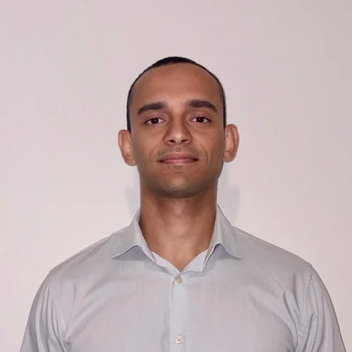

Analisi dei processi
Troviamo inefficienze e colli di bottiglia. Definiamo interventi concreti e misurabili.
Esempio Mappatura del ciclo ordine-consegna e passaggi manuali ridotti da nove a quattro.
Consulenza operativa e software per le PMI
Aiutiamo le PMI a semplificare i processi, collegare i software che già usano e trasformare i dati in decisioni.
In azienda o online, senza impegno
Sono i segnali che incontriamo più spesso nelle PMI. Ognuno, da solo, costa ore di lavoro ogni settimana.
Dall'organizzazione del lavoro agli strumenti per farlo meglio.
Troviamo inefficienze e colli di bottiglia. Definiamo interventi concreti e misurabili.
Esempio Mappatura del ciclo ordine-consegna e passaggi manuali ridotti da nove a quattro.
Applicazioni e integrazioni costruite attorno al tuo lavoro, non il contrario.
Esempio Un portale preventivi collegato al gestionale, al posto dei fogli Excel inviati via email.
Dai fogli sparsi a una visione d'insieme. Indicatori e dashboard per decidere meglio.
Esempio Vendite e margini in una dashboard aggiornata ogni mattina, al posto del report mensile.
Meno attività ripetitive, più tempo per ciò che conta. AI applicata a problemi reali.
Esempio Lettura automatica di DDT e fatture fornitori, con controllo umano solo sulle eccezioni.
Non sai quale competenza ti serve? È proprio quello che scopriamo insieme nel check-up.
Tre interventi tipici nelle PMI: cosa non funzionava, cosa abbiamo fatto, cosa è cambiato.
−75%tempo dedicato alla raccolta dei dati
−60%tempo dedicato a controlli e solleciti
−60%tempo di ricerca delle informazioni
“Pensavamo servisse un nuovo gestionale. Ci hanno mostrato che bastava far interagire bene quello che avevamo già.”
Ogni progetto parte dalla comprensione del problema. Analizziamo i processi, individuiamo le opportunità e costruiamo soluzioni concrete, misurandone il risultato.
Si parte dal check-up gratuito, poi entriamo nel dettaglio di come funziona realmente la tua azienda. Ascoltiamo le persone coinvolte, osserviamo i processi e analizziamo strumenti, dati e attività quotidiane.
Identifichiamo attività manuali, inefficienze, duplicazioni e colli di bottiglia. Diamo priorità alle opportunità che possono generare il maggior beneficio.
Definiamo la soluzione più adatta al problema, scegliendo tecnologie e strumenti in funzione delle esigenze dell'azienda, non viceversa.
Trasformiamo il progetto in una soluzione concreta: automazioni, integrazioni, dashboard o software sviluppati e integrati nei processi esistenti.
Verifichiamo l'impatto della soluzione attraverso risultati concreti: tempo risparmiato, riduzione degli errori, maggiore controllo dei dati e semplificazione delle attività.
Cosa cambia, in pratica, quando lavori con noi.
Quando serve, osserviamo il lavoro dove succede, non solo da una videochiamata.
Processi, software, dati e AI nello stesso gruppo: nessun fornitore da coordinare, nessun rimpallo di responsabilità.
Prima un progetto pilota a prezzo concordato, con un obiettivo misurabile. Poi decidi tu se proseguire.
Chi analizza il problema è la stessa persona che costruisce la soluzione e la segue nel tempo.
Competenze complementari e un obiettivo comune: rendere più semplice il lavoro delle imprese.
Head of Sales
Guido lo sviluppo commerciale della startup unendo una formazione in Finanza Quantitativa all'esperienza nell'analisi dei mercati energetici e commodity per realtà multinazionali. Trasformo dati e dinamiche di mercato complesse in dashboard e soluzioni digitali su misura, affiancando le PMI in un percorso continuo di ottimizzazione e crescita.
LinkedInFront-End / Cloud Developer
Progetto e creo interfacce intuitive, applicazioni web e app mobili su misura, veloci e facili da usare. Dal design dell'esperienza utente all'architettura cloud, fino alla trasformazione di dati complessi in informazioni chiare e utili.
LinkedInOperations & Performance Consultant
Analizzo processi, performance e dati aziendali per individuare ciò che rallenta la crescita. Connetto operations e tecnologia per trasformare informazioni in processi e decisioni migliori.
LinkedIn
Software Engineer
Sviluppo sistemi affidabili che reggono la crescita e si integrano con gli strumenti che già usi. Dall'automazione dei processi all'AI, trasformando le esigenze della tua impresa in soluzioni che funzionano e durano nel tempo.
LinkedInLe domande che ci fanno più spesso. Se la tua non c'è, scrivici.
Il check-up iniziale è gratuito. Dopo ti proponiamo un progetto pilota a prezzo fisso, con obiettivi e tempi scritti prima di iniziare. Nessuna sorpresa a consuntivo.
Quasi mai. Partiamo dagli strumenti che usi già e li colleghiamo tra loro. Proponiamo di sostituire un software solo quando è davvero l'ostacolo principale.
Sì. Lavoriamo con piccole e medie imprese, e dimensioniamo ogni intervento sul beneficio atteso. Spesso i risultati più rapidi arrivano proprio nelle realtà piccole.
Un progetto pilota porta risultati concreti e misurabili fin dalle prime fasi.
Qualche ora nella fase di analisi, per ascoltare le persone coinvolte. Poi brevi verifiche periodiche: il lavoro tecnico è nostro.
Restiamo disponibili per assistenza, manutenzione ed evoluzioni, con un supporto concordato in base alle tue esigenze.
Guardiamo insieme come lavorate oggi e ti lasciamo per iscritto le tre aree da cui partire. Senza impegno.